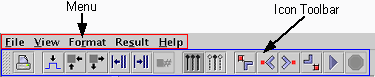
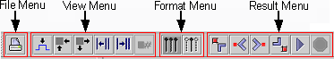

Menu and icon toolbar

- Menu
The menu consists of five different menus. Each of these menus contains submenus. The menus are useful for navigating through the error map user interface. For details, see links above In this section.
- Icon toolbar
The icon toolbar contains buttons providing the functionality of selected features of the menu toolbar. The functionality of these buttons is explained in the description of the submenus.
The icon toolbar is subdivided into five fields which all relate to the menu toolbar (see below).

Functional changes
- Introduced before SmarTest 6.3.2